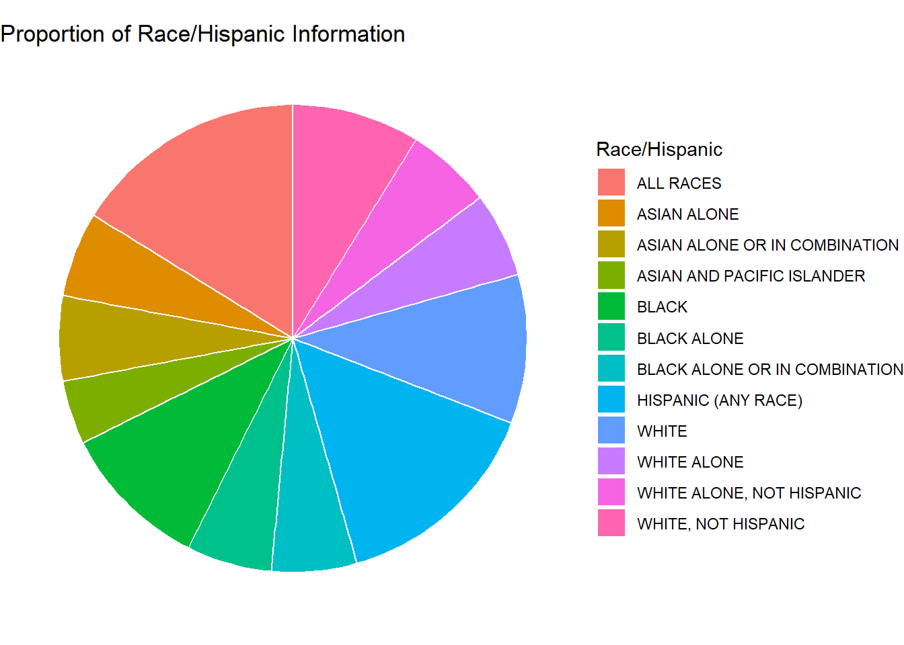

library(tidyverse)
library(ggplot2)
library(readxl)
knitr::opts_chunk$set(echo = TRUE, warning=FALSE, message=FALSE)Challenge 6 Instructions
challenge_6
usa_households
Visualizing Time and Relationships
Challenge Overview
Today’s challenge is to:
- read in a data set, and describe the data set using both words and any supporting information (e.g., tables, etc)
- tidy data (as needed, including sanity checks)
- mutate variables as needed (including sanity checks)
- create at least one graph including time (evolution)
- try to make them “publication” ready (optional)
- Explain why you choose the specific graph type
- Create at least one graph depicting part-whole or flow relationships
- try to make them “publication” ready (optional)
- Explain why you choose the specific graph type
R Graph Gallery is a good starting point for thinking about what information is conveyed in standard graph types, and includes example R code.
Read in data
df <- read_excel('./_data/USA Households by Total Money Income, Race, and Hispanic Origin of Householder 1967 to 2019.xlsx', skip = 4)
df <- select(df, -(Total)) %>%
rename(Number = ...2,
MedianEstimate = Estimate...13,
MeanEstimate = Estimate...15,
MedianEstimateMOE = `Margin of error1 (±)...14`,
MeanEstimateMOE = `Margin of error1 (±)...16`) %>%
head(-31)
head(df)# A tibble: 6 × 15
...1 Number Under…¹ $15,0…² $25,0…³ $35,0…⁴ $50,0…⁵ $75,0…⁶ $100,…⁷ $150,…⁸
<chr> <chr> <dbl> <dbl> <dbl> <dbl> <dbl> <dbl> <dbl> <dbl>
1 ALL RA… <NA> NA NA NA NA NA NA NA NA
2 2019 128451 9.1 8 8.3 11.7 16.5 12.3 15.5 8.3
3 2018 128579 10.1 8.8 8.7 12 17 12.5 15 7.2
4 2017 2 127669 10 9.1 9.2 12 16.4 12.4 14.7 7.3
5 2017 127586 10.1 9.1 9.2 11.9 16.3 12.6 14.8 7.5
6 2016 126224 10.4 9 9.2 12.3 16.7 12.2 15 7.2
# … with 5 more variables: `$200,000 and over` <dbl>, MedianEstimate <dbl>,
# MedianEstimateMOE <dbl>, MeanEstimate <chr>, MeanEstimateMOE <chr>, and
# abbreviated variable names ¹`Under $15,000`, ²`$15,000\r\nto\r\n$24,999`,
# ³`$25,000\r\nto\r\n$34,999`, ⁴`$35,000\r\nto\r\n$49,999`,
# ⁵`$50,000\r\nto\r\n$74,999`, ⁶`$75,000\r\nto\r\n$99,999`,
# ⁷`$100,000\r\nto\r\n$149,999`, ⁸`$150,000\r\nto\r\n$199,999`Briefly describe the data
The data set looks at total income by race and Hispanic origin of United States Households from 1967 to 2019. The initial representation of the data is unorganized. An arbitrary row describes total income distribution for a given race and Hispanic origin by year. Note that a row represents a population of households, not just one.
It is hard to interpret the data while it is stored in the current format because the first column is not tidy. The first column is describing not only the year variable but the race variable as well. For instance, the second row is for the all race category in the year 2019. This is readable in excel format, but confusing in a tibble.
Tidy Data (as needed)
First, note that the only columns in the data set which are missing are included in rows which currently describe the race and hispanic category. This is confirmed with the query below. This fact will become important later.
df %>%
filter(if_any(.cols = everything(), ~ is.na(.x)))# A tibble: 12 × 15
...1 Number Under…¹ $15,0…² $25,0…³ $35,0…⁴ $50,0…⁵ $75,0…⁶ $100,…⁷ $150,…⁸
<chr> <chr> <dbl> <dbl> <dbl> <dbl> <dbl> <dbl> <dbl> <dbl>
1 ALL R… <NA> NA NA NA NA NA NA NA NA
2 WHITE… <NA> NA NA NA NA NA NA NA NA
3 WHITE… <NA> NA NA NA NA NA NA NA NA
4 WHITE… <NA> NA NA NA NA NA NA NA NA
5 WHITE… <NA> NA NA NA NA NA NA NA NA
6 BLACK… <NA> NA NA NA NA NA NA NA NA
7 BLACK… <NA> NA NA NA NA NA NA NA NA
8 BLACK… <NA> NA NA NA NA NA NA NA NA
9 ASIAN… <NA> NA NA NA NA NA NA NA NA
10 ASIAN… <NA> NA NA NA NA NA NA NA NA
11 ASIAN… <NA> NA NA NA NA NA NA NA NA
12 HISPA… <NA> NA NA NA NA NA NA NA NA
# … with 5 more variables: `$200,000 and over` <dbl>, MedianEstimate <dbl>,
# MedianEstimateMOE <dbl>, MeanEstimate <chr>, MeanEstimateMOE <chr>, and
# abbreviated variable names ¹`Under $15,000`, ²`$15,000\r\nto\r\n$24,999`,
# ³`$25,000\r\nto\r\n$34,999`, ⁴`$35,000\r\nto\r\n$49,999`,
# ⁵`$50,000\r\nto\r\n$74,999`, ⁶`$75,000\r\nto\r\n$99,999`,
# ⁷`$100,000\r\nto\r\n$149,999`, ⁸`$150,000\r\nto\r\n$199,999`To tidy the tibble, we need to clean up the left column. The first loop cleans up footnotes and any excess information in the column. After the first loop, the leftmost column is reset. However, it is not clean yet. The second loop creates a vector containing the race information for each row such that the ith item in the vector corresponded to the ith row of the tibble. I added the new column to the data set and renamed the first and second column for clarity. Then I removed any rows containing NA. In doing so, I know that I am not losing any information because I verified earlier that the only missing values in the data set correspond to the rows describing the race and Hispanic origin information for the current group.
# Clean the leftmost column
c1 <- df$...1
for (i in seq_along(c1)) {
item <- c1[[i]]
# Case where item is a category containing a number -> "WHITE ALONE 24"
if (!(is.na(slice(df, i)$Number)) & str_detect(item, " ")) {
pieces <- str_split(item, " ")[[1]]
c1[i] = pieces[1]
}
# Case where item is has superscript -> "2017 2"
else if (is.na(slice(df, i)$Number)){
c1[i] = str_squish(gsub('[0-9]+', '', item))
}
}
# Reset leftmost column
df$...1 <- c1
# Create a new column describing race information
c2 <- df$...1
category <- c2[[1]]
for (i in seq_along(c2)) {
item <- c2[[i]]
if (!(str_detect(item, "[0-9][0-9][0-9][0-9]")))
category <- item
c2[i] = category
}
# Add new column to tibble, remove old column
df <- mutate(df, `Race/Hispanic` = c2) %>%
relocate(`Race/Hispanic`, .after = `...1`) %>%
rename(Year = `...1`)
# Remove old rows
df <- na.omit(df)
head(df, n = 15)# A tibble: 15 × 16
Year Race/H…¹ Number Under…² $15,0…³ $25,0…⁴ $35,0…⁵ $50,0…⁶ $75,0…⁷ $100,…⁸
<chr> <chr> <chr> <dbl> <dbl> <dbl> <dbl> <dbl> <dbl> <dbl>
1 2019 ALL RAC… 128451 9.1 8 8.3 11.7 16.5 12.3 15.5
2 2018 ALL RAC… 128579 10.1 8.8 8.7 12 17 12.5 15
3 2017 ALL RAC… 127669 10 9.1 9.2 12 16.4 12.4 14.7
4 2017 ALL RAC… 127586 10.1 9.1 9.2 11.9 16.3 12.6 14.8
5 2016 ALL RAC… 126224 10.4 9 9.2 12.3 16.7 12.2 15
6 2015 ALL RAC… 125819 10.6 10 9.6 12.1 16.1 12.4 14.9
7 2014 ALL RAC… 124587 11.4 10.5 9.6 12.6 16.4 12.1 14
8 2013 ALL RAC… 123931 11.4 10.3 9.5 12.5 16.8 12 13.9
9 2013 ALL RAC… 122952 11.3 10.4 9.7 13.1 17 12.5 13.6
10 2012 ALL RAC… 122459 11.4 10.6 10.1 12.5 17.4 12 13.9
11 2011 ALL RAC… 121084 11.6 10.2 10.2 13.1 17.2 11.9 13.8
12 2010 ALL RAC… 119927 11.2 10.7 9.4 13.3 16.8 12.4 14.1
13 2009 ALL RAC… 117538 10.4 10 9.7 13.2 17.4 12.4 14.5
14 2008 ALL RAC… 117181 10.4 10 9.4 13.4 17 12.5 15
15 2007 ALL RAC… 116783 10 10 9 12.8 17.3 12.6 15.3
# … with 6 more variables: `$150,000\r\nto\r\n$199,999` <dbl>,
# `$200,000 and over` <dbl>, MedianEstimate <dbl>, MedianEstimateMOE <dbl>,
# MeanEstimate <chr>, MeanEstimateMOE <chr>, and abbreviated variable names
# ¹`Race/Hispanic`, ²`Under $15,000`, ³`$15,000\r\nto\r\n$24,999`,
# ⁴`$25,000\r\nto\r\n$34,999`, ⁵`$35,000\r\nto\r\n$49,999`,
# ⁶`$50,000\r\nto\r\n$74,999`, ⁷`$75,000\r\nto\r\n$99,999`,
# ⁸`$100,000\r\nto\r\n$149,999`The ‘MeanEstimate’ and ‘MeanEstimateMOE’ columns are character type, but it would be much more sensible if they were of type double. They are of character type because a few of the rows contain “N” to indicate that the data is missing. I am going to replace these values with NA so we can convert the type of the column. This will make the visualizations easier.
# Remove "N" in MeanEstimate
c1 = df$MeanEstimate
for (i in seq_along(c1)) {
item <- c1[[i]]
if (item == "N")
c1[i] = NA
}
# Remove "N" in MeanEstimateMOE
c2 = df$MeanEstimateMOE
for (i in seq_along(c2)) {
item <- c2[[i]]
if (item == "N")
c2[i] = NA
}
# Reset columns to clean version
df$MeanEstimate = c1
df$MeanEstimateMOE = c2
# Convert type of columns
df <- type_convert(df)Time Dependent Visualization
First, let’s look at the column names to get an idea about what we may want to visualize with the data set. The column names are printed out using the code below.
colnames(df) [1] "Year" "Race/Hispanic"
[3] "Number" "Under $15,000"
[5] "$15,000\r\nto\r\n$24,999" "$25,000\r\nto\r\n$34,999"
[7] "$35,000\r\nto\r\n$49,999" "$50,000\r\nto\r\n$74,999"
[9] "$75,000\r\nto\r\n$99,999" "$100,000\r\nto\r\n$149,999"
[11] "$150,000\r\nto\r\n$199,999" "$200,000 and over"
[13] "MedianEstimate" "MedianEstimateMOE"
[15] "MeanEstimate" "MeanEstimateMOE" When I look at the column names, the one that sticks out in particular is “MeanEstimate”. I would like to know if the mean income estimate for each group of people in the data set has improved with time or not. To figure out the answer to this question, we could make a scatter plot of the mean income estimate versus time. Additionally, we can use ggplot to make one plot for each group of people in the data set. The code below generates the plot.
ggplot(df, mapping = aes(x = Year, y = MeanEstimate, color = `Race/Hispanic`)) +
geom_line(na.rm = TRUE) +
geom_point(na.rm = TRUE) +
labs(
x = "Year",
y = "Average Income Estimate",
title = "Average Income Estimate By Year And Hispanic Origin"
)
This plot is very interesting, but it is a little hard to interpret because there are so many categories. It may be better visualized if we combine categories together. For instance, we could consider the categories “ASIAN ALONE”, “ASIAN ALONE OR IN COMBINATION”, “ASIAN AND PACIFIC ISLANDER” all to be the category “ASIAN”. The code chunk below first reduces possible categories in the ‘Race/Hispanic’ column to the set (“ALL”, “ASIAN”, “BLACK”, “HISPANIC”, “WHITE”). Afterwards, the code generates a similar plot and adds a smoothed line to the data to better visualize the trends.
mdf <- df %>% mutate(`Race/Hispanic` = case_when(str_detect(`Race/Hispanic`, 'ASIAN') ~ 'ASIAN',
str_detect(`Race/Hispanic`, 'BLACK') ~ 'BLACK',
str_detect(`Race/Hispanic`, 'WHITE') ~ 'WHITE',
str_detect(`Race/Hispanic`, 'HISPANIC') ~ 'HISPANIC',
str_detect(`Race/Hispanic`, 'ALL') ~ 'ALL'))
ggplot(mdf, mapping = aes(x = Year, y = MeanEstimate, color = `Race/Hispanic`)) +
geom_point(na.rm = TRUE) +
geom_smooth(na.rm = TRUE, method = 'loess', formula = 'y ~ x') +
labs(
x = "Year",
y = "Average Income Estimate",
title = "Average Income Estimate By Year And Hispanic Origin",
color = "Race"
)
Personally, I think this view of the data is much easier to digest. The interesting thing about this is that it shows that the “ASIAN” group has the highest average income and it seems to be much higher than the other groups. I would not have expected this.
Visualizing Part-Whole Relationships
Let’s try to figure out how much data we have on each race category. We will generate two variations of this diagram. The first one will contain all of the categories that were presented in the data. The second will contain the modified categories just as we did in the previous section.
# Get the counts of each category
dfVals <- df %>%
group_by(`Race/Hispanic`) %>%
summarise(Count = n())# Basic piechart
ggplot(dfVals, aes(x="", y=Count, fill=`Race/Hispanic`)) +
geom_bar(stat="identity", width=1, color="white") +
coord_polar("y", start=0) +
theme_void() +
labs(
title = "Proportion of Race/Hispanic Information"
)
This chart is interesting, but I think the same chart with a reduced number of categories would be easier to look at. This alternative view is generated below.
mdfVals <- mdf %>%
group_by(`Race/Hispanic`) %>%
summarise(Count = n())
# Basic piechart
ggplot(mdfVals, aes(x="", y=Count, fill=`Race/Hispanic`)) +
geom_bar(stat="identity", width=1, color="white") +
coord_polar("y", start=0) +
theme_void() +
labs(
title = "Proportion of Race/Hispanic Information"
)
Now we can easily see that most of the data was collected on the “WHITE” population. It also looks like the “ASIAN” population had the least amount of data collected on them. Maybe that explains why their group had the highest average income in the previous section.